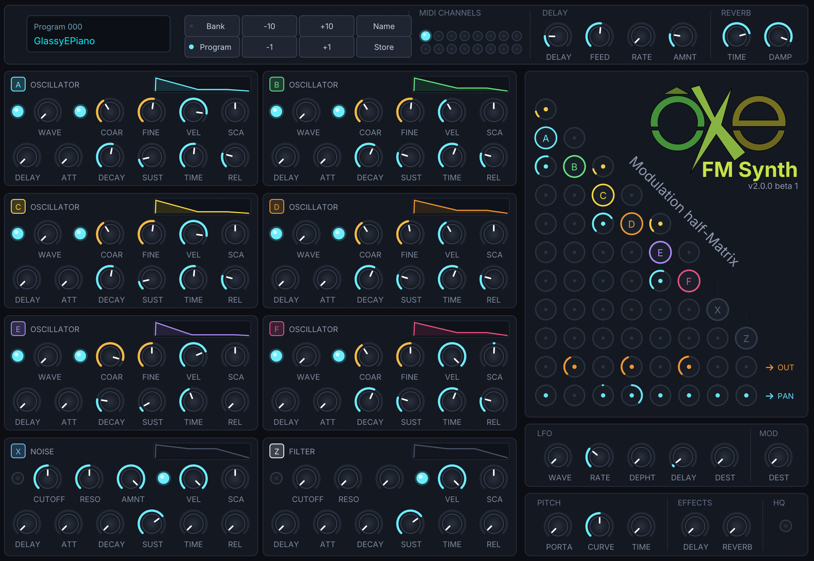

An open source frequency modulation synthesizer plugin for Windows, macOS and Linux.

Listen below to some of the many tracks composed using only Oxe FM Synth patches from the contest One Synth Challenge edition 81:
Oxe FM Synth prioritizes CLAP (CLever Audio Plug-in), the modern, open, and non-proprietary audio plugin standard, while offering VST3 for full host compatibility.
CLAP is completely open, free, and developed collaboratively by the audio community. It resolves decades of licensing constraints, providing a truly open foundation for musicians and developers.
For digital audio workstations and environments that require Steinberg's VST3 standard, Oxe FM Synth also provides an optional, fully native VST3 implementation.
Drop the downloaded plugin bundle into your system's standard audio plugin directory:
# CLAP (Recommended)
~/Library/Audio/Plug-Ins/CLAP/oxefmsynth.clap
# VST3
~/Library/Audio/Plug-Ins/VST3/oxefmsynth.vst3# CLAP (Recommended)
~/.clap/oxefmsynth.clap
# VST3
~/.vst3/oxefmsynth.vst3# CLAP (Recommended)
%LOCALAPPDATA%\Programs\Common\CLAP\oxefmsynth.clap
# VST3
C:\Program Files\Common Files\VST3\oxefmsynth.vst3
Typing make builds the demo, converter, standalone application, and the CLAP plugin into the bin/ directory.
# 1. Clone repository
git clone https://github.com/oxesoft/oxefmsynth.git
cd oxefmsynth
# 2. Build CLAP plugin (SDK downloaded automatically)
make clap
# 3. Install to your user plugin folder
make install
# (Optional) Build VST3 plugin
make vst3
make install-vst3| Architecture | 8-Operator Frequency Modulation (FM) Synthesizer |
|---|---|
| Multitimbral | 16 MIDI channels |
| Operators | 6 Oscillators, 1 Noise Generator / Limiter, 1 Filter, all with envelopes |
| Modulation | Frequency modulation half-matrix with self-modulation |
| Polyphony | Up to 64 simultaneous voices |
| Effects | Global Reverb and Delay sends per channel |
| Soundbanks | Embedded soundbanks (Bank 0 by Annabelle, Bank 1 by Summa & Teksonic) |
| Plugin Formats | CLAP (Recommended), VST3 |
| Supported Platforms | Windows, macOS, Linux |
| License | GNU General Public License (GPL) |